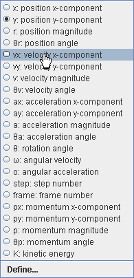  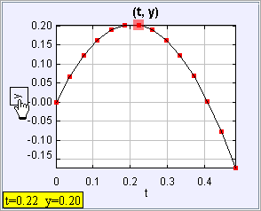
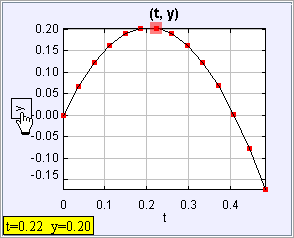
Pogled
na diagram
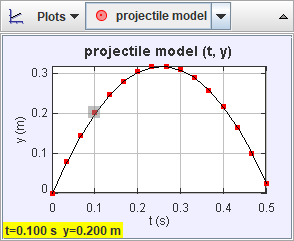
Pogled na diagram prikazuje diagrame sledi podatkov. Ima svojo lastno orodno vrstico za izbiro sledi in prikaz več diagramov. Barva oznak diagrama je enaka barvi izbrane sledi. V diagramu je poudarjena podatkovna točka, ki ustreza tekoči video sličici ali trenutno izbranemu koraku, njene koordinate so prikazane v levem spodnjem kotu.
1. Izbiranje sledi
V spustnem seznamu na orodni vrstici pogleda na diagram izberi želeno sled.
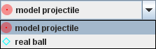
2. Več diagramov in sinhronizirane osi x
Kliknemo na gumb Grafi in izberemo število želenih grafov. Več grafov je poravnano vertikalno.
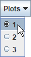
Vodoravne osi grafov lahko sinhroniziramo z vklopom Sinhro. Tako bodo uporabljali isto spremenljivko in merilo. Z izklopom te možnosti lahko neodvisno nastavljamo vodoravne spremenljivke in merila. Navpične spremenljivke in merila so vedno neodvisne.
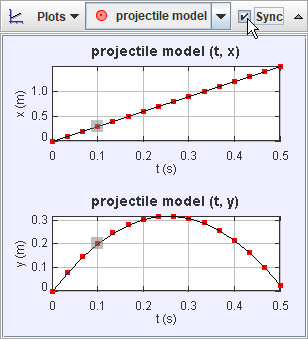
3. Nastavljanje spremenljivk na oseh grafov
Mišji kurzor pomaknemo na oznako osi tako, da se pojavi kvadratek. Nato mkliknemo na kvadratek in izberemo želeno spremenljivko iz spustnega seznama.
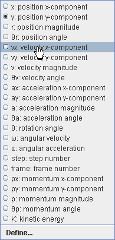 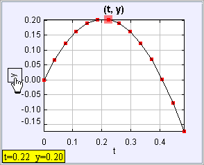
4. Nastavljanje
merila
Privzeto se grafi avtomatsko umerjajo. Imamo več možnosti za ročno nastavljanje vodoravnega in navpičnega merila:
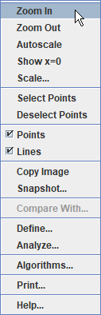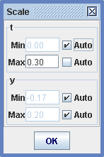
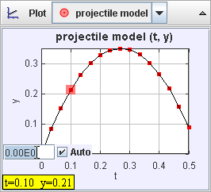
5. Skrivanje podatkovnih točk in črt
Z desnim mišjim gumbom kliknemo na diagram in za skrivanje podatkovnih točk ali črt izklopimo ustrezno opcijo.
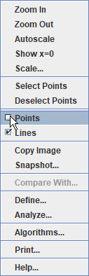
6. Definiranje novih podatkovnih stolpcev z Graditeljem podatkov
Z bdesnim mišjim gumbom kliknemo na diagram in izberemo Definiraj... . Odpre se Graditelj podatkov, ki omogoča definiranje lastnih spremenljivk, takoimenovanih podatkovnih funkcij za grafe in podatkovne tabele. Kliknemo na ustrezen gumb Dodaj in tako dodamo nove podatkovne funkcije ali definiramo parametre za buporabo v funkcijskih nizrazih.
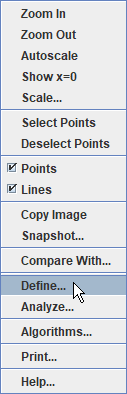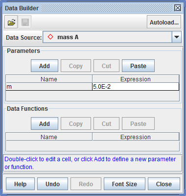
Podatkovne funkcije so lahko poljubne matematične funkcije parametrov, podatkovnih stolpcev, definiranih s sledmi ali drugih podatkovnih funkcij.
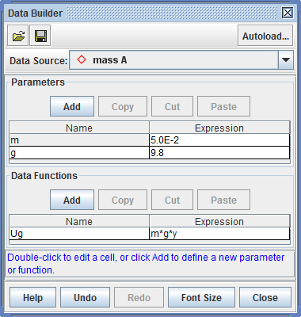
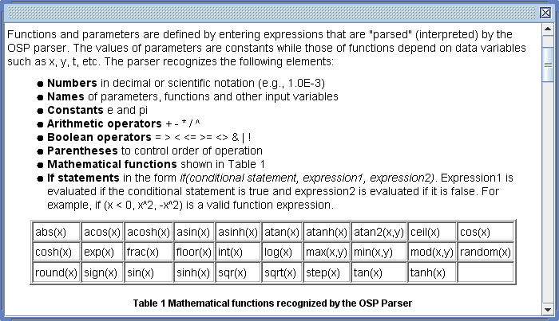
6. Analiza podatkov s podatkovnim orodjem
Z desnim mišjim gumbom kliknemo na diagram in izberemo Analiziraj... Tako za analizo odpremo njegove podatke v Podatkovnem orodju.
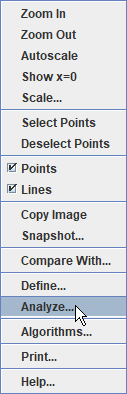
Podatkovno orodje nudi analizo podatkov vključno z avtomatskim in ročnim prilagajanjem krivulj za vse ali izbrano množico podatkov. Pomoč o uporabi Podatkovnega orodja dosežemo s klikom na njegov gumb Pomoč.
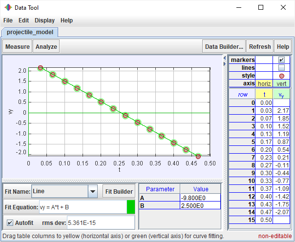